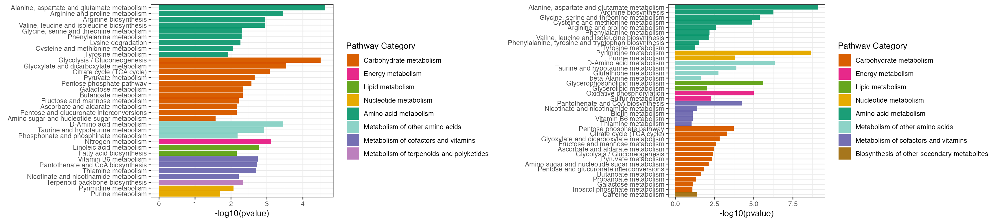
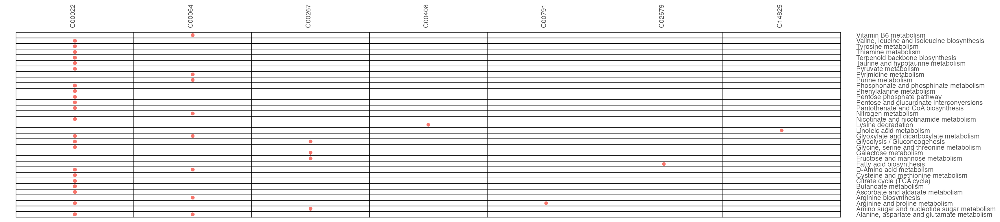
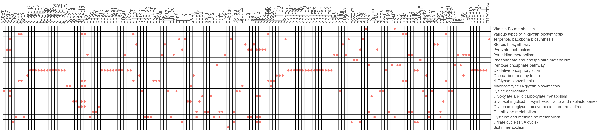
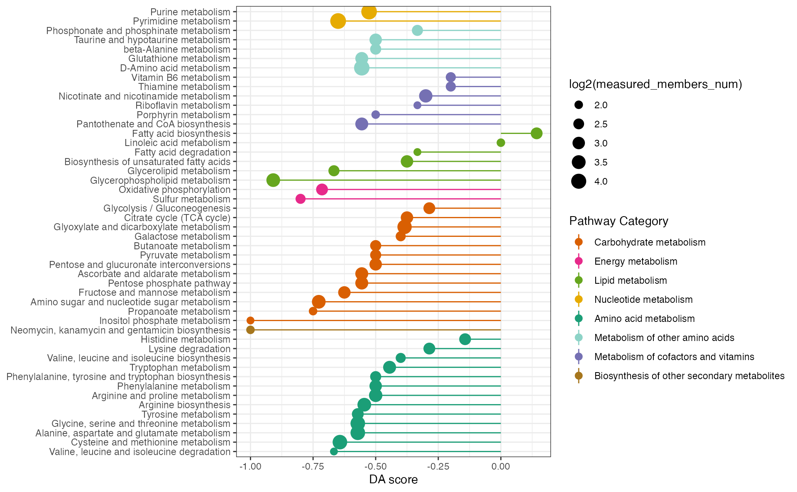
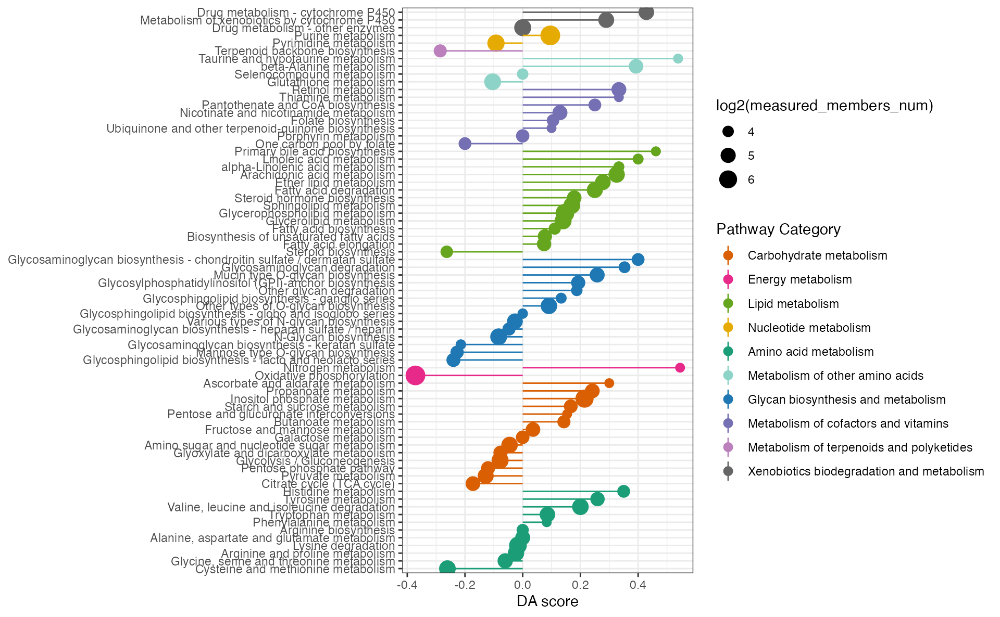
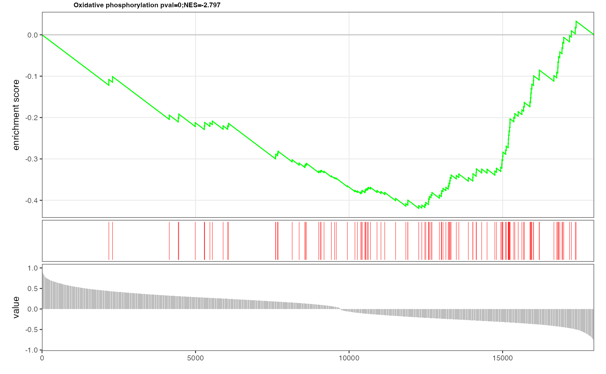

Differential Information
The case study by Liao et al. (2022) integrated metabolic and transcriptional analysis to reveal elevated pyrimidine metabolism and glutaminolysis in TNBC among 31 breast tumors, and classified them into two clusters. We utilize MNet to identify a set of features whose activities significantly differ between these two clusters. This result will hopefully hint at some specific biological activities that are pathologically altered in tumoral samples.
Pathway enrichment analysis
Pathway enrichment analysis, includes gene pathway enrichment analysis only focusing on genes, metabolite pathway enrichment analysis only focusing on metabolites and extended pathway enrichment analysis focusing on both genes and metabolites, using function “ePEAlyser” in MNet.
## meta_dat is the metabolic data of the 31 samples
## gene_dat is the transcriptional data of the 31 samples
## group is the group information of the 31 samples
## mlimma is the function of Differential Metabolite analysis by limma
diff_meta <- mlimma(meta_dat, group)
head(diff_meta)## # A tibble: 6 × 8
## logFC AveExpr t P.Value adj.P.Val B logP name
## <dbl> <dbl> <dbl> <dbl> <dbl> <dbl> <dbl> <chr>
## 1 2.86 22.6 9.25 1.52e-10 0.0000000332 14.1 7.48 C02045
## 2 2.44 26.2 7.80 6.83e- 9 0.000000748 10.4 6.13 C00267
## 3 -1.82 27.1 -6.80 1.10e- 7 0.00000622 7.64 5.21 C00073
## 4 -3.78 20.9 -6.79 1.14e- 7 0.00000622 7.61 5.21 C05674
## 5 -2.20 21.4 -6.58 2.07e- 7 0.00000907 7.02 5.04 C00255
## 6 -2.37 21.6 -6.45 2.98e- 7 0.0000109 6.66 4.96 C00242## # A tibble: 6 × 8
## logFC AveExpr t P.Value adj.P.Val B logP name
## <dbl> <dbl> <dbl> <dbl> <dbl> <dbl> <dbl> <chr>
## 1 6.92 23.1 11.3 1.07e-12 0.0000000190 17.9 7.72 APH1B
## 2 21.4 23.4 10.6 5.69e-12 0.0000000506 16.4 7.30 GFRA1
## 3 -5.76 24.4 -10.2 1.67e-11 0.0000000937 15.5 7.03 RFC4
## 4 10.5 14.8 10.1 2.11e-11 0.0000000937 15.3 7.03 FAM47E
## 5 4.02 5.65 9.83 3.69e-11 0.000000120 14.8 6.92 FAM87B
## 6 -10.8 20.6 -9.79 4.07e-11 0.000000120 14.7 6.92 ORC6Extended pathway enrichment analysis (ePEA)
Function ‘ePEAlyser’ with ‘Extended’ parameter, investigates metabolic pathway dysregulation considering both metabolites and genes, which we refer to as ePEA.
## combine the metabolite information and gene information
all_dat <- rbind(diff_gene, diff_meta)
head(all_dat)## # A tibble: 6 × 8
## logFC AveExpr t P.Value adj.P.Val B logP name
## <dbl> <dbl> <dbl> <dbl> <dbl> <dbl> <dbl> <chr>
## 1 6.92 23.1 11.3 1.07e-12 0.0000000190 17.9 7.72 APH1B
## 2 21.4 23.4 10.6 5.69e-12 0.0000000506 16.4 7.30 GFRA1
## 3 -5.76 24.4 -10.2 1.67e-11 0.0000000937 15.5 7.03 RFC4
## 4 10.5 14.8 10.1 2.11e-11 0.0000000937 15.3 7.03 FAM47E
## 5 4.02 5.65 9.83 3.69e-11 0.000000120 14.8 6.92 FAM87B
## 6 -10.8 20.6 -9.79 4.07e-11 0.000000120 14.7 6.92 ORC6
## filter the increase differential genes and metabolites
all_dat1 <- all_dat %>%
filter(logFC > 0.58) %>%
filter(adj.P.Val < 0.05)
## the increase pathway analysis of both genes and metabolites
result1 <- ePEAlyser(all_dat1$name, out = "Extended", p_cutoff = 0.01)
## filter the decrease differential genes and metabolites
all_dat2 <- all_dat %>%
filter(logFC < -0.58) %>%
filter(adj.P.Val < 0.05)
## ePEAlyser performs pathway enrichment analysis of differential metabolites and differential expression genes, utilizing the Extended as a parameter
result2 <- ePEAlyser(all_dat2$name, out = "Extended", p_cutoff = 0.01)
p <- cowplot::plot_grid(plotlist = list(result1$p_barplot, result2$p_barplot))
p
result1$gp
result2$gpMetabolite pathway enrichment analysis (mPEA)
Function ‘ePEAlyser’ with ‘metabolite’ parameter, investigates metabolic pathway dysregulation considering only metabolites, which we refer to as mPEA.
## filter the increase differential metabolites
diff_meta1 <- diff_meta %>%
filter(logFC > 0.58) %>%
filter(adj.P.Val < 0.05)
## ePEAlyser performs pathway enrichment analysis of differential metabolites, utilizing 'metabolite' as a parameter
result1 <- ePEAlyser(diff_meta1$name, out = "metabolite", p_cutoff =
0.1)
## filter the decrease differential metabolites
diff_meta2 <- diff_meta %>%
filter(logFC < -0.58) %>%
filter(adj.P.Val < 0.05)
## ePEAlyser performs pathway enrichment analysis of differential metabolites, utilizing 'metabolite' as a parameter
result2 <- ePEAlyser(diff_meta2$name, out = "metabolite", p_cutoff =
0.1)
p <- cowplot::plot_grid(plotlist = list(result1$p_barplot, result2$p_barplot))
p
result1$gp
result2$gpGene pathway enrichment analysis (gPEA)
Function ‘ePEAlyser’ with ‘gene’ parameter, investigates metabolic pathway dysregulation considering only genes, which we refer to as gPEA.
## filter the increase differential expression genes
diff_gene1 <- diff_gene %>%
filter(logFC > 0.58) %>%
filter(adj.P.Val < 0.05)
## ePEAlyser performs pathway enrichment analysis of differential genes, utilizing 'gene' as a parameter
result1 <- ePEAlyser(diff_gene1$name, out = "gene", p_cutoff = 0.1)
## filter the decrease differential expression genes
diff_gene2 <- diff_gene %>%
filter(logFC < -0.58) %>%
filter(adj.P.Val < 0.05)
## ePEAlyser performs pathway enrichment analysis of differential genes, utilizing 'gene' as a parameter
result2 <- ePEAlyser(diff_gene2$name, out = "gene", p_cutoff = 0.1)
p <- cowplot::plot_grid(plotlist = list(result1$p_barplot, result2$p_barplot))
p
result1$gp
result2$gp
Pathway differential abundance analysis
Pathway differential abundance analysis, includes gene pathway differential abundance analysis only focusing on genes, metabolite pathway differential abundance analysis only focusing on metabolites and extended pathway differential abundance analysis focusing on both genes and metabolites, using function “ePDAlyser” in MNet.
Extended pathway differential abundance score (ePDA)
Function ‘ePDAlyser’ with ‘Extended’ parameter, investigates metabolic pathway dysregulation considering both metabolites and genes, which we refer to as ePDA (extended pathway differential abundance).
## filter the differential expression genes
diff_gene_increase <- diff_gene %>%
filter(logFC > 0.58) %>%
filter(adj.P.Val < 0.05)
diff_gene_decrease <- diff_gene %>%
filter(logFC < -0.58) %>%
filter(adj.P.Val < 0.05)
## filter the differential metabolites
diff_meta_increase <- diff_meta %>%
filter(logFC > 0.58) %>%
filter(adj.P.Val < 0.05)
diff_meta_decrease <- diff_meta %>%
filter(logFC < -0.58) %>%
filter(adj.P.Val < 0.05)
## the extended pathway differential abundance analysis
ExtendDAscore_result <- ePDAlyser(
c(diff_gene_increase$name, diff_meta_increase$name),
c(diff_gene_decrease$name, diff_meta_decrease$name),
c(diff_gene$name, diff_meta$name),
sort_plot = "category",
min_measured_num = 20,
out = "Extended"
)
ExtendDAscore_result## $result
## # A tibble: 84 × 10
## Pathway DA_score Increase_members_num Decrease_members_num
## <chr> <dbl> <int> <int>
## 1 Neomycin, kanamycin and g… -0.571 0 4
## 2 Phenylalanine, tyrosine a… -0.4 0 4
## 3 Biotin metabolism -0.4 1 3
## 4 Oxidative phosphorylation -0.392 6 53
## 5 D-Amino acid metabolism -0.391 4 13
## 6 Cysteine and methionine m… -0.35 7 28
## 7 Phosphonate and phosphina… -0.333 2 6
## 8 Sulfur metabolism -0.286 1 5
## 9 Steroid biosynthesis -0.263 2 7
## 10 Caffeine metabolism -0.25 1 2
## # ℹ 74 more rows
## # ℹ 6 more variables: Measured_members_num <int>, Increase_member_result <chr>,
## # Decrease_member_result <chr>, Measure_member_result <chr>,
## # KEGG_pathwayid <chr>, `Pathway Category` <chr>
##
## $pMetabolite pathway differential abundance score (mPDA)
Function ‘ePDAlyser’ with ‘metabolite’ parameter, investigates metabolic pathway dysregulation considering only metabolites, which we refer to as mPDA (metabolite pathway differential abundance).
## filter the differential metabolites
diff_meta_increase <- diff_meta %>%
filter(logFC > 0.58) %>%
filter(adj.P.Val < 0.05)
diff_meta_decrease <- diff_meta %>%
filter(logFC < -0.58) %>%
filter(adj.P.Val < 0.05)
## the metabolite pathway differential abundance analysis
dascore_result_meta <- ePDAlyser(diff_meta_increase$name,
diff_meta_decrease$name,
diff_meta$name,
sort_plot = "category",
min_measured_num = 3,
out = "metabolite")
dascore_result_meta## $result
## # A tibble: 59 × 10
## Pathway DA_score Increase_members_num Decrease_members_num
## <chr> <dbl> <int> <int>
## 1 Starch and sucrose metabo… -1 0 2
## 2 Inositol phosphate metabo… -1 0 3
## 3 Ether lipid metabolism -1 0 1
## 4 Selenocompound metabolism -1 0 1
## 5 N-Glycan biosynthesis -1 0 1
## 6 Biotin metabolism -1 0 2
## 7 Caffeine metabolism -1 0 2
## 8 Neomycin, kanamycin and g… -1 0 4
## 9 Glycerophospholipid metab… -0.909 0 10
## 10 Sulfur metabolism -0.8 0 4
## # ℹ 49 more rows
## # ℹ 6 more variables: Measured_members_num <int>, Increase_member_result <chr>,
## # Decrease_member_result <chr>, Measure_member_result <chr>,
## # KEGG_pathwayid <chr>, `Pathway Category` <chr>
##
## $p
Gene pathway differential abundance score (gPDA)
Function ‘ePDAlyser’ with ‘gene’ parameter, investigates metabolic pathway dysregulation considering only genes, which we refer to as gPDA (gene pathway differential abundance).
## filter the differential genes
diff_gene_increase <- diff_gene %>%
filter(logFC > 0.58) %>%
filter(adj.P.Val < 0.05)
diff_gene_decrease <- diff_gene %>%
filter(logFC < -0.58) %>%
filter(adj.P.Val < 0.05)
## the gene pathway differential abundance analysis
dascore_result_gene <- ePDAlyser(diff_gene_increase$name,
diff_gene_decrease$name,
diff_gene$name,
sort_plot = "category",
min_measured_num = 10,
out = "gene")
dascore_result_gene## $result
## # A tibble: 83 × 10
## Pathway DA_score Increase_members_num Decrease_members_num
## <chr> <dbl> <int> <int>
## 1 Oxidative phosphorylation -0.372 6 48
## 2 Phosphonate and phosphina… -0.333 1 3
## 3 Terpenoid backbone biosyn… -0.286 2 8
## 4 Steroid biosynthesis -0.263 2 7
## 5 Cysteine and methionine m… -0.261 6 18
## 6 Phenylalanine, tyrosine a… -0.25 0 1
## 7 Glycosphingolipid biosynt… -0.24 2 8
## 8 Mannose type O-glycan bio… -0.227 2 7
## 9 Glycosaminoglycan biosynt… -0.214 1 4
## 10 One carbon pool by folate -0.2 4 8
## # ℹ 73 more rows
## # ℹ 6 more variables: Measured_members_num <int>, Increase_member_result <chr>,
## # Decrease_member_result <chr>, Measure_member_result <chr>,
## # KEGG_pathwayid <chr>, `Pathway Category` <chr>
##
## $p
Pathway set enrichment analysis
Pathway set enrichment analysis, includes gene set enrichment analysis only focusing on genes, metabolite set enrichment analysis only focusing on metabolites and extended pathway set enrichment analysis focusing on both genes and metabolites, using function “eSEAlyser” in MNet.
Extended pathway set enrichment analysis (eSEA)
Extended pathway set enrichment analysis which includes genes and metabolites
library(MNet)
diff_meta <- mlimma(meta_dat, group)
diff_gene <- mlimma(gene_dat, group)
meta.data <- diff_meta$logFC
names(meta.data) <- diff_meta$name
gene.data <- diff_gene$logFC
names(gene.data) <- diff_gene$name
dat <- c(meta.data, gene.data)
## the Extended pathway set enrichment analysis
result <- eSEAlyser(dat, out = "Extended")eSEA plot of all the pathway
result_filter <- result %>%
dplyr::filter(pval < 0.1) %>%
arrange(NES) %>%
mutate(pathway=factor(pathway,levels=pathway))
p <- ggplot(result_filter,aes(pathway,NES,fill=-log10(pval))) +
geom_bar(stat="identity")+
scale_fill_gradient(low = "blue", high = "red", na.value = NA)+
theme_bw()+
labs(x=NULL)+
coord_flip()
peSEA plot of interested pathway which includes genes and metabolites
## The plot of Butanoate metabolism contains genes and metabolites
p <- pESEA("Oxidative phosphorylation", dat, out = "Extended")
p
Metabolite set enrichment analysis (mSEA)
Metabolite set enrichment analysis which only includes metabolites
## the metabolite pathway set enrichment analysis
result <- eSEAlyser(meta.data, out = "metabolite")mSEA plot of interested pathway which only includes metabolites
## The plot of Butanoate metabolism contains metabolites
p <- pESEA("Oxidative phosphorylation", meta.data, out = "metabolite")
pGene set enrichment analysis (gSEA)
Gene set enrichment analysis which only includes genes
## the gene pathway set enrichment analysis
result <- eSEAlyser(gene.data, out = "gene")gSEA plot of interested pathway which includes genes
## The plot of Butanoate metabolism contains genes
p <- pESEA("Oxidative phosphorylation", gene.data, out = "gene")
p